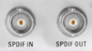

SPDIF IN/OUT Connectors (Optional)
 |
SPDIF IN and SPDIF OUT are BNC connectors used for input and output of digital audio signals in the context of audio measurements.
The Sony/Philips digital interface (SPDIF) connectors are in line with IEC 60958-3:2010 Consumer. They are installed together with an audio board (option R&S CMW-B400B or R&S CMW-U400).